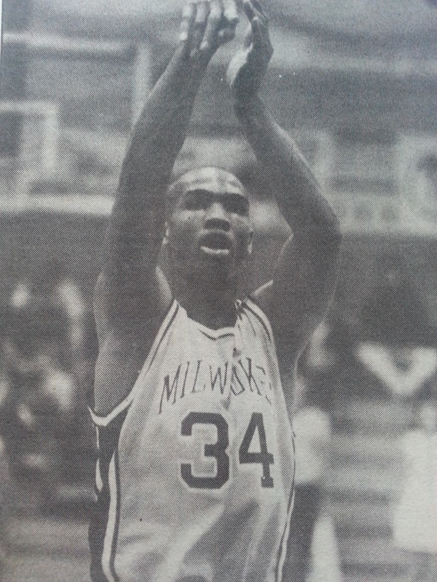

"Making Of A Ball Player"
Let's learn!
This stands out!
Let's learn more!
Craig states that he enjoys cooking, shooting pool and spending time with his family.
Craig shares his fondest memories to be the individual births of his two children, Carissa & Craig Jr. He indicated the next favorite moment in his life was entering the game against the then Washington Bullets in his NBA debut with the Milwaukee Bucks. This was only followed by being the underdog and his college experience of beating the Wisconsin Badgers in their home arena. Click here to go to highlights.
His introduction into athlectics and the sports world began when he was a mere teenager. Craig Greene received his first form of organized coaching while participating on his 8th grade basketball team at Samuel Morse Middle School. While at this school, he was also involved with the gymnastics program. This was something that he dug into in his younger years by simply doing backflips with neighborhood friends. He expanded those and other experiences into slightly more intense competition as he entered high school. At Milwaukee Tech, Craig tried out for and made the freshmen basketball team. That same year he found it necessary to become apart of the track team. After dedicating his time and energy to both, he was able to pull portions of his track training to ultimately enhance his basketball performance.
| 1989-1990 | here | here | here | here | here |
| 1990-1991 | here | here | here | here | here |
| 1991-1992 | here | here | here | here | here |
| 1992-1993 | here | here | here | here | here |